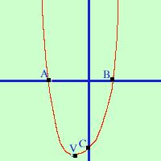

Disegnare il grafico della parabola
y = x2 + 2x - 8
seguiamo questo schema
- trovare le coordinate del vertice
- trovare (se esistono) le intersezioni con l'asse x
- trovare l' intersezione con l'asse delle y
- unire in un grafico i punti trovati
- trovare le coordinate del vertice
Per trovare le coordinate Vx e
Vy posso applicare le formule:
b
Vx= - ----
2a
b2 - 4ac
Vy= - -----------
4a
sapendo che nel nostro caso a=1 b=2 c = -8
2
Vx= - ----- = -1
2·1
22 - 4·1·(-8)
4 + 32
Vy= - ---------------- = - ---------- = -9
4·1
4
poiche' il secondo calcolo puo' facilmente portare
a degli errori ai miei alunni ho insegnato a trovare solo
la x e poi sostituirla nell'equazione per trovare la y
sostituisco -1 ad x nell'equazione di partenza
y = (-1)2 + 2·(-1) - 8 =
1 - 2 - 8 = -9
Un altro sistema e' fare la derivata prima e porla uguale a zero:
infatti il vertice per la parabola e' sempre un punto di
massimo o di minimo
y' = 2x + 2
y' = 0
2x + 2= 0
2x = -2
2x/2 = -2/2
x = -1
poi sostituisco -1 alla x nella funzione di partenza
per trovare la y (come sopra)
Il vertice ha coordinate V(-1,-9)
- trovare (se esistono) le intersezioni con l'asse x
possono anche non esistere cioe' la parabola puo' essere o tutta sopra
o tutta sotto l'asse delle x, in tal caso si disegna senza intersezioni
Per trovare le intersezioni devo fare il sistema fra la parabola e
l'asse delle x (equazione y=0)
 y = x2 + 2x - 8
y = x2 + 2x - 8
y = 0
0 = x2 + 2x - 8
y = 0
ogni uguaglianza puo' essere letta a rovescio
x2 + 2x - 8 = 0
y = 0
con la formula ridotta
risultava molto piu' semplice
-2   [22 - 4·1·(-8)] [22 - 4·1·(-8)]
x1,2 = ----------------------
2·1
y = 0
-2 36
x1,2 = --------------
2
y = 0
-2 6
x1,2 = ------------
2
y = 0
Ho due soluzioni : la prima
x1 = (-2-6)/2 = -4
y = 0
la seconda
x = (-2+6)/2 = 2
y = 0
I due punti di intersezione con l'asse delle x sono
A(-4,0) B(2,0)
-
trovare l' intersezione con l'asse delle y
Basta fare il sistema fra la parabola e
l'asse delle y (equazione x=0)
y = x2 + 2x - 8
x = 0
sostituisco
y = 02 + 2·0 - 8 = 0
x = 0
il punto di intersezione con l'asse y e'
C(0,-8)
In generale il punto di intersezione con l'asse y di una
funzione y=f(x) ha come primo valore zero e come secondo valore
il termine
noto della funzione
perche'?
-

unire in un grafico i punti trovati
puoi vedere qui a fianco il risultato
(un po' sbilenco, la figura
dovrebbe essere simmetrica e io dovrei comprarmi una tavoletta grafica)
|